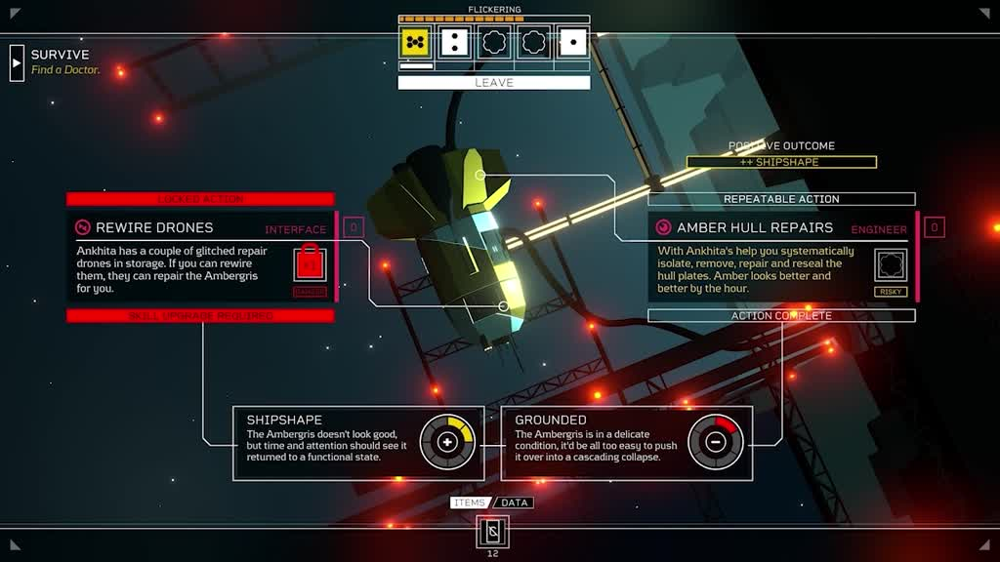
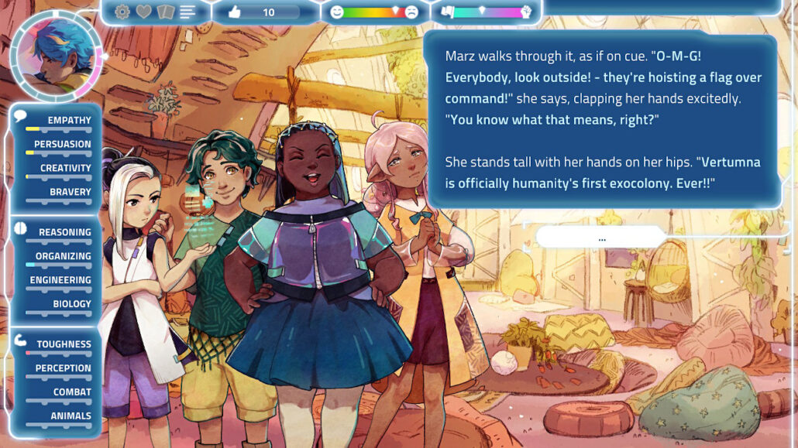
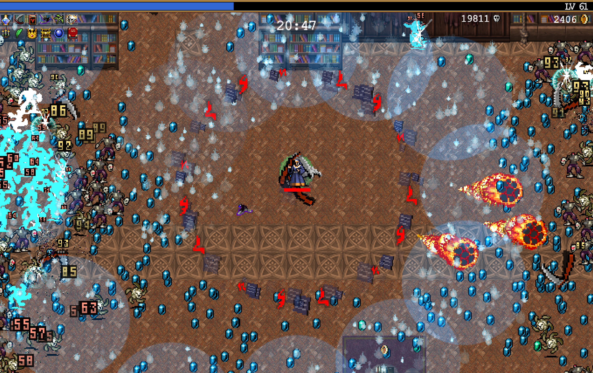
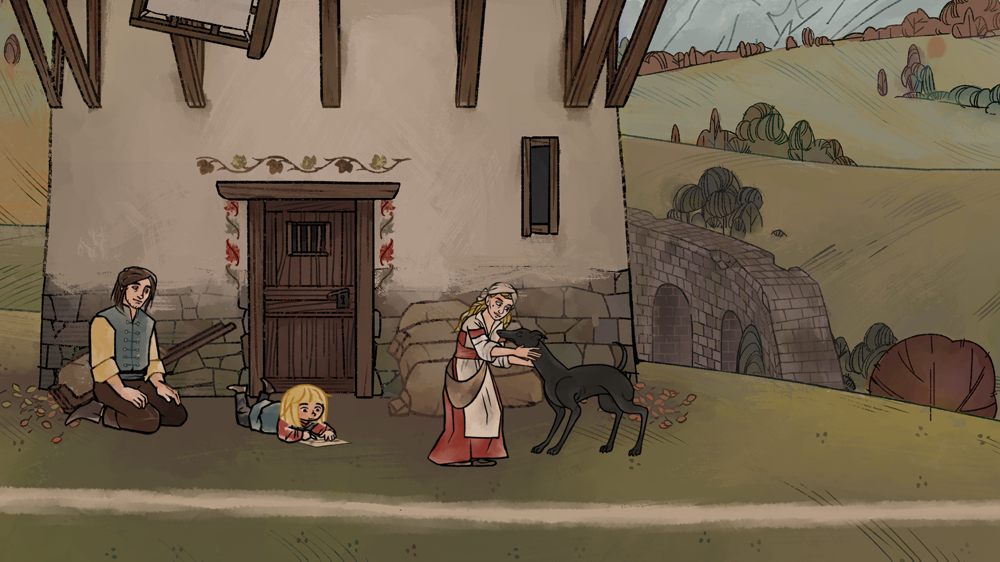

Back...
2022 Game of the Year
It's GAME OF THE YEAR season! Why trust the opinion of pundits you don't know when I will give you mine unaskedfor?
I made a more concerted effort to play new games in 2022, resulting in a much longer list of contenders than previous years. Despite that, the winner was clear once I found it - my pick for 2022 is:
::: Citizen Sleeper :::

Combines a compelling cyberpunk story with a dice rolling/worker placement mechanic that will feel very satisfying to board game fans. The game element (managing your dice) is well integrated and essential to the experience, which sets Citizen Sleeper apart from many other narrative games (including my runner-up). I can't recommend this game enough!
But wait, you say - runner-up? Yes, Citizen Sleeper was not the only narrative-heavy game I sank hours into last year. Another one I loved is:
::: I Was a Teenage Exocolonist :::

Essentially a dating sim in a sci-fi setting, with a card game mechanic pasted loosely on top (which can be skipped if you just want story). You follow your character growing up from age 10 to 20, making choices along the way about friendships and school/work that shape the adult you become (I played through 3 times to see all the major storylines). It's bubbly and positive and those who enjoy the genre will find this a beautiful and well-crafted entry.
If you're thinking "enough with the narrative games already, Vanessa!" - I hear you, readers. Get ready to lose hours- nay, days- of your life in:
::: Vampire Survivors :::

If you haven't already discovered this gem, I'll only say how addictive it is - each run is fast and unlocks new upgrades for your character, so that you'll find yourself saying "ok, just one more try..." over and over until it's long past your bedtime. You can play a demo version on the website.
The above are my top picks, but I played so many good games this year. Here's some extra lightning reviews/recommendations:
- Lego Star Wars: The Skywalker Saga: if you want a game to coop with your kids, or you want to revisit the Star Wars trilogies without having to actually watch them again
- Stray: if you love cats and robots
- Olli Olli World: if you love skateboarding or the SNES classic Uniracers
- Metal Hellsinger: if you've ever wished Doom was a rhythm game
- Infernax: if you want a solid retro 2D Metroidvania
- Pentiment: if you've ever wished that Umberto Eco's The Name of the Rose had a video game tie-in
"Pentiment is the smartest game I've played in years", Marshall Honorof: "Pentiment distills what Obsidian does best down to its essence: strong dialogue and meaningful player choice. Believe it or not, this is more than enough to carry this charming medieval murder mystery. What really sells Pentiment, though, is the extraordinary amount of respect it has for its audience's intelligence. ... if Assassin's Creed is medieval history as a blockbuster Hollywood film, then Pentiment is medieval history as a PBS documentary. It's not quite as exciting, but potentially even more engrossing."

I could continue but I'd better start thinking about 2023 releases now. :D
The full list:
Bold = completed / played at least 10 hours (if it's not a linear narrative game)
2022 releases:
- Elden Ring
- Lego Star Wars: The Skywalker Saga
- Stray
- Olli Olli World
- Citizen Sleeper
- Norco
- Tunic
- Weird West
- Fashion Police Squad (demo)
- Gotham Knights <-- I worked on this!
- Signalis
- Metal Hellsinger
- Vampire Survivors
- Not for Broadcast
- Somerville
- I was a Teenage Exocolonist
- Two Point Campus
- Plague Tale Requiem
- Pentiment
- Infernax
- TMNT Shredder's Revenge
Older:
- Fortnite
- Xcom 2
- Yooka-Laylee and the Impossible Lair
- Warhammer 40k: Inquisitor
- Fell Seal: Arbiter's Mark
- Beat Saber
- State of Decay 2
- Control
- Breath of the Wild
- Super Mario Maker 2
- Super Mario 64
- Carrion
- Jedi Fallen Order
- Diablo 2 Remastered
- Hitman
Posted: January 2023